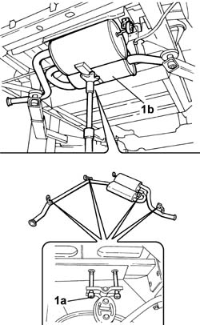
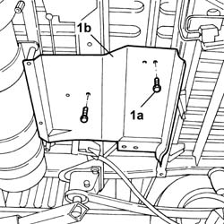

1076A52 EXHAUST PIPE REAR HEAT SHIELD - R.R.
- Path
- Procedures > 10 ENGINE UNIT > 1076 EXHAUST PIPES AND SILENCERS > 1076A EXHAUST PIPE FASTENINGS AND PROTECTIONS > 1076A52 EXHAUST PIPE REAR HEAT SHIELD - R.R.
- Kind
- repair procedure (removal / refitting; the operation number is the code)
- Applies to
- engines: 2.0 16V; all production periods
- Interactive page
- https://sloeber94.github.io/elrnDB-fDct/en/#/244000881
Applies to: engines: 2.0 16V; all production periods
 Removing
Removing
 Refitting
RefittingPosition the vehicle on the lift.
Position a hydraulic device underneath the exhaust pipe to support it.
1. Undo the bolts (1a) for the brackets with the flexible buffer supporting the exhaust silencer (1b) and secure the exhaust pipe.
Remove the hydraulic support.

Applies to: engines: 2.0 16V; all production periods
1. Undo the retaining bolts (1a) and remove the heat shield (1b).

Applies to: engines: 2.0 16V; all production periods
Refitting
RemovingFit the heat shield and tighten the fixing bolts.
Value daNm | Fastening | Component | Ø | |
|---|---|---|---|---|
- | 2 | Bolts | - | M8 |
Raise the exhaust pipe and tighten the bolts fixing the brackets with flexible buffers to the bodyshell to torque.
Value daNm | Fastening | Component | Ø | |
|---|---|---|---|---|
- | 2.4 | Bolts | - | M8 |
Remove the vehicle from the lift.